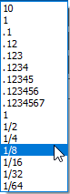
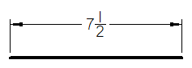
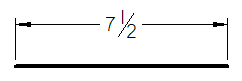
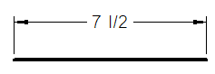

Units tab (Dimension Style and Dimension Properties)
Sets the primary units for dimensions. Specifies formatting for primary units in numeric, linear and angular tolerance values.
The Units tab is available in the Dimension Style dialog box and in the Dimension Properties dialog box.
- Linear
-
Specifies the unit settings for a linear dimension.
- Units
-
Sets the dimensioning units for linear dimensions. This can differ from the working units of the document.
- Round-off
-
Sets the round-off for the value in a linear dimension. This control is sensitive to the unit setting (decimal or fractional) and contains values as appropriate for the unit. This control is also sensitive to the dimension being placed and contains values as appropriate for the dimension.
Note:To display fractional dimension round-off, set units to feet, feet-inches, or inches.

- Unit label
-
Sets the unit label in a linear dimension. You can type the characters to be used as a unit label.
- Subunit label
-
Sets the subunit label in a linear dimension. You can type the characters that you want to use as a subunit label.
- Fraction separator
-
For fractional dimension values, specifies the characters displayed between the whole number and the fractional part. You can type up to five characters in the Fraction Separator box, including spaces, for example, 15 * 2/3. By default, if this field is left blank, a space is displayed between the whole number and the fraction, for example, 15 2/3.
-
To insert a hyphen between the whole number and the fraction, for example, 15-2/3, place the cursor in the box and type a hyphen, or type an em dash to insert a longer line.
-
To insert a character with spaces on both sides, for example, 15 * 2/3, press Spacebar, type the character, and press Spacebar.
This option does not apply to dimensions with decimal values. Also, previously placed dimensions and annotations are not affected by this setting.
-
- Maximum subunits
-
Sets the maximum subunits in a linear dimension.
Maximum subunits typically are used with Feet-Inch units, where Feet are the primary units and Inches are the subunits. Thus, there may be 12 subunits (12 inches) per primary unit (1 foot). However, you can enter a value up to 255.
You can use this option to specify a cutoff value for when to display dimensions or measurements in inches and when to display them in feet-inches.
-
When the dimension or measurement value is less than the maximum subunits, then the value is displayed in subunits.
-
When the dimension or measurement value exceeds the maximum subunits, both the primary units and the subunits are displayed.
Example:To display measurements in inches when they are less than 10 feet long, you can set the maximum subunits to 120. If a measurement is 8 feet long, then the dimension is displayed as 96 inches. If it is 12 feet long, then the dimension is displayed as 10 feet and 24 inches.
Note:This applies only to the first dimension that exceeds 120 inches. After that, the display reverts to ft-in, as if the subunit setting is not used.
-
- Fractional Display Style
-
Specifies the fractional display settings for a linear dimension, in documents using the ANSI (inch) template.
Fractional display options are only available when you select a fractional round-off.
- Stacked
-
Formats the selected fractional value of a linear dimension in stacked format.
Example:
- Skewed
-
Formats the selected fractional value of a linear dimension in skewed format.
Example:
- Linear
-
Formats the selected fractional value of a linear dimension inline with the nominal value. This is the default option.
Example:
- Fraction Size
-
Specifies the percentage of dimension font size to apply to the fraction, from 50% to 100% (the default).
- Linear Tolerance
-
Specifies the unit settings for linear tolerance. The options in this section apply when the Dimension Type is set to Tolerance (unit). They are not applicable when the Dimension Type is set to Tolerance (alpha).
- Units
-
Sets the dimensioning units for linear tolerance. This can differ from the working units of the document.
- Round-off
-
Sets the round-off for the linear tolerance values. This control is sensitive to the unit setting (decimal or fractional) and contains values as appropriate for the unit. This control is also sensitive to the dimension being placed and contains values as appropriate for the dimension.
- Unit label
-
Sets the unit label for linear tolerance. You can type the characters to be used as a unit label.
- Subunit label
-
Sets the subunit label for linear tolerance. You can type the characters that you want to use as a subunit label.
- Fraction separator
-
For fractional dimension values, specifies the characters displayed between the whole number (the Unit label) and the fractional part (the Subunit label) when both are displayed in the linear tolerance. You can type up to five characters in the Fraction Separator box, including spaces, for example, 15 * 2/3. By default, if this field is left blank, a space is displayed between the whole number and the fraction, for example, 15 2/3.
This option does not apply to dimensions with decimal values. Also, previously placed dimensions and annotations are not affected by this setting.
- Maximum subunits
-
Sets the maximum subunits for linear tolerance in a linear dimension.
Maximum subunits typically are used with Feet-Inch units, where Feet are the primary units and Inches are the subunits. Thus, there may be 12 subunits (12 inches) per primary unit (1 foot). However, you can enter a value up to 255.
You can use this option to specify a cutoff value for when linear tolerance is displayed in inches and when it is displayed in feet-inches.
-
When the linear tolerance value is less than the maximum subunits, then the linear tolerance is displayed in subunits.
-
When the linear tolerance value exceeds the maximum subunits, both the primary units and the subunits are displayed.
Note:This applies only to the first dimension that exceeds the maximum subunits. After that, the display reverts to ft-in, as if the subunit setting is not used.
-
- Angular
-
Sets the units for an angular dimension.
- Units
-
Sets the dimensioning units for an angular dimension. This can differ from the working units of the document.
- Round-off
-
Sets the round-off for the angular dimension value. This control is sensitive to the unit setting (decimal or fractional) and contains values as appropriate for the unit. This control is also sensitive to the dimension being placed and contains values as appropriate for the dimension.
- Angular tolerance
-
Sets the units for the angular tolerance. The options in this section apply when the Dimension Type is set to Tolerance (unit). They are not applicable when the Dimension Type is set to Tolerance (alpha).
- Units
-
Sets the dimensioning units for angular tolerance. This can differ from the working units of the document.
- Round-off
-
Sets the round-off for angular tolerance values.
- Round-up
-
Sets the options for rounding dimension values.
- All values (.625 = .63, .635 = .64)
-
Specifies that you want to round up all dimensional values.
- Odd values only (.625 = .62, .635 = .64)
-
Specifies that you want to round up only the odd dimensional values.
- Delimiter
-
Specifies the decimal delimiter for the primary dimension units.
- . Period
-
Sets a period as the decimal delimiter.
- , Comma
-
Sets a comma as the decimal delimiter.
- Space
-
Sets a space as the decimal delimiter.
- Zeros
-
Specifies whether a zero is on the left or right of the decimal in a dimension.
- Leading
-
Places a zero to the left of the decimal point if there are no numbers to the left.
- Trailing
-
Places zeros to the right of the decimal point. The number of zeros placed is based on the active setting for Round-off. For example, if the dimensional value is .5, and the round-off setting is .1234, the dimensional value appears as .5000.
- Zero inches for ft-in
-
Specifies that a zero (0) is displayed when units are set to feet and inches and the inch value is zero with a fractional round-off.
This applies to all dimensions and annotations that can display linear distance values based on the dimension style.
Example:If the distance is 12.25 inches, and the units are set to ft-in with a fractional round-off, then the dimension displays as 1’–0 1/4”.
Note:You can select the Advanced Round-off button
 on the command bar to specify round-off for linear, angular, and tolerance values
in one location, the Round-off dialog box.
on the command bar to specify round-off for linear, angular, and tolerance values
in one location, the Round-off dialog box.
Look up more details
Dimension Properties dialog boxGeneral tab (Dimension Style and Dimension Properties)
Secondary Units tab (Dimension Style and Dimension Properties)
Text tab (Dimension Style and Dimension Properties)
Lines and Coordinate tab (Dimension Style and Dimension Properties)
Spacing tab (Dimension Style and Dimension Properties)
Smart Depth tab (Dimension Style, Dimension Properties)
Terminator and Symbol tab (Dimension Style and Dimension Properties)
Annotation tab (Dimension Style and Dimension Properties)
Feature Callout tab